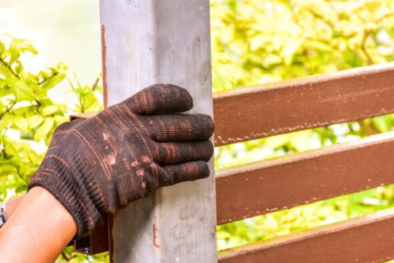

Posts or panels
A board swap is a small job. Resetting posts in clay is not.

Call for a repair when one section failed and the rest of the fence is still doing its job. Call for a replacement when the posts have heaved down the line. New boards on moving posts are a one-season fix.
Spring is when this phone rings. Frost heave shows up as the ground thaws, and a fence that looked fine in January leans in April. We would rather reset two posts than sell a whole new line. We will also tell you when patching is a waste, which is when the concrete bells are broken the length of the yard.
We price the line on the lot. These are the pieces that move the number. We do not publish a per-foot menu.
A board swap is a small job. Resetting posts in clay is not.
One corner is a repair. A whole side that has jacked is a replacement.
A stock profile can be tied in. An old specialty vinyl color may not.
A locked backyard or a span the truck cannot reach takes longer.
Frozen ground can wait. A fence that is down and holding dogs in cannot.
Hardware-only repairs are cheaper than a new leaf and new posts.
If a post or two heaved and the rest are solid, we reset those posts and rehang the section. If the whole run lifted, the line needs new posts. Putting new boards on posts that already jacked out of the clay will lean again. We can usually tell which case it is from the ground line and the concrete.
No. We replace the failed stretch and leave the sound line alone. A gate that drags, a split rail, or a few missing pickets is not a reason to rebuild 150 feet. A continuous row of rotten posts is.
Common white panels, yes. A discontinued color or a profile the manufacturer dropped, maybe not. We will say if the repair will be a close match or an obvious patch. Sometimes the honest answer is to replace that run in a current profile.
Yes. Most of the time the leaf sagged or the post moved, so the latch misses the catch. We look at the hinges and the post before we sell a new gate. If the post heaved, the latch is the symptom.
When the posts are rotten at the ground or the concrete has broken loose down the line. Hardware and new boards will not hold that. We would rather quote the rebuild on that stretch than take a repair that fails next spring.
Related: Gates · Wood fencing · Vinyl fencing
Call (701) 394-8468 or send the town, the fence type, and roughly how much line you need.